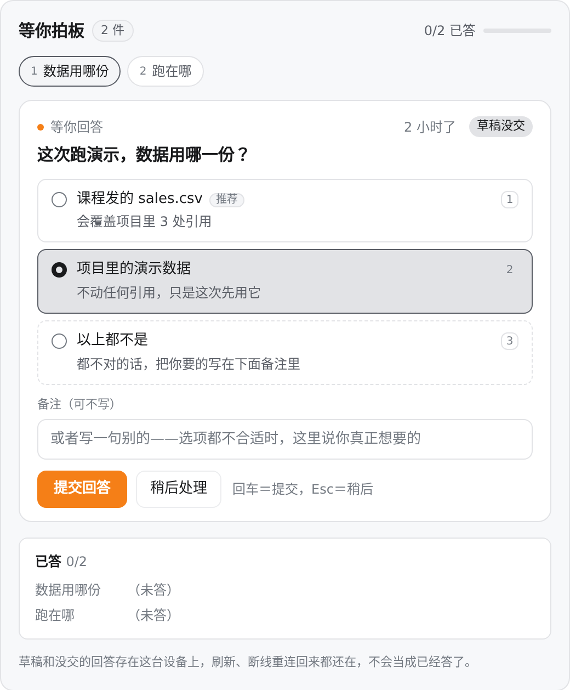
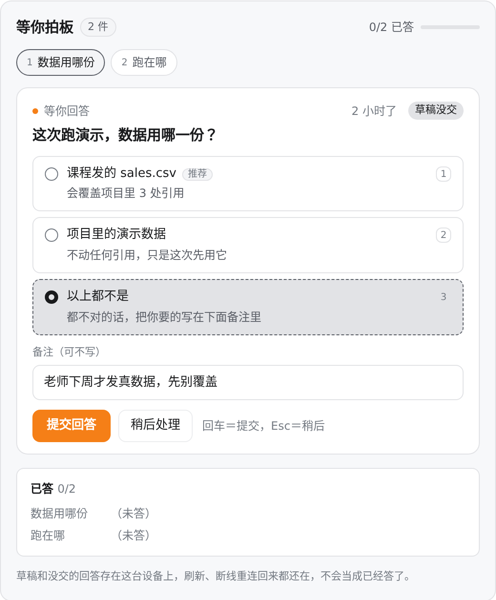
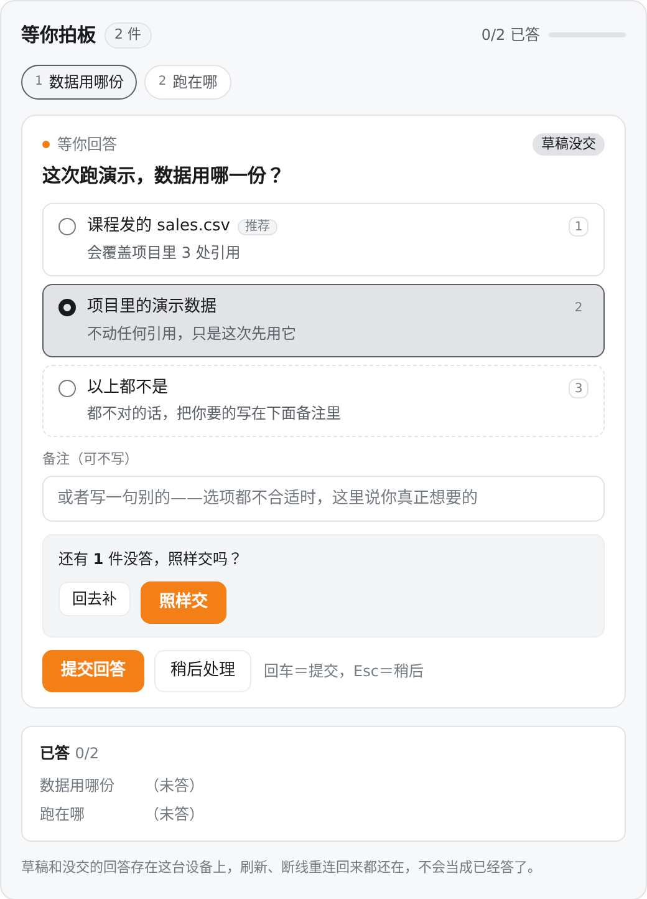
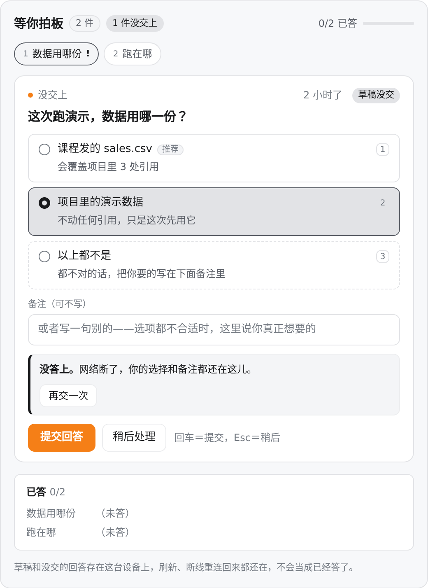
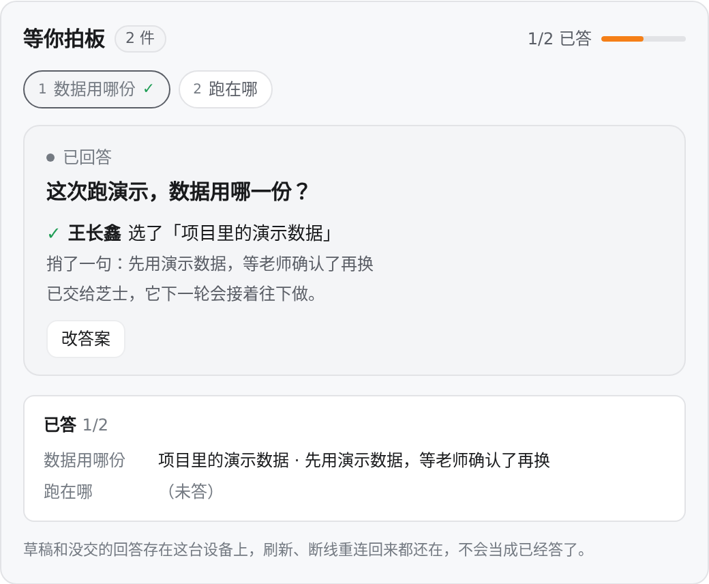
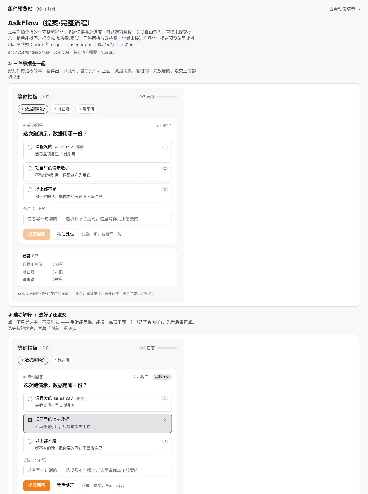
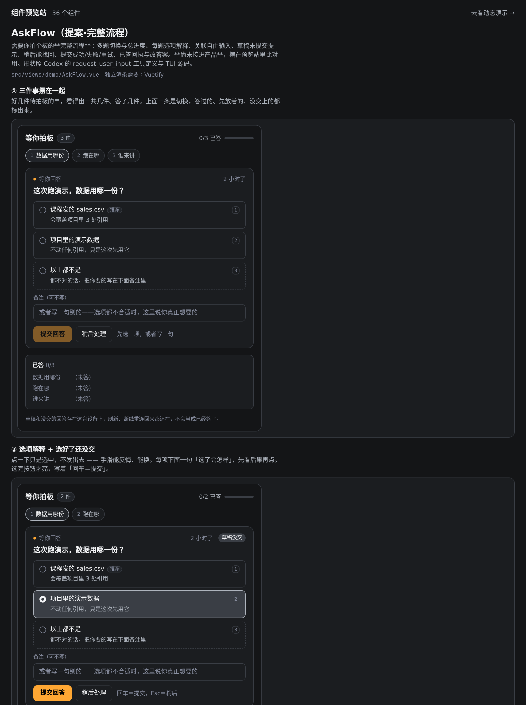
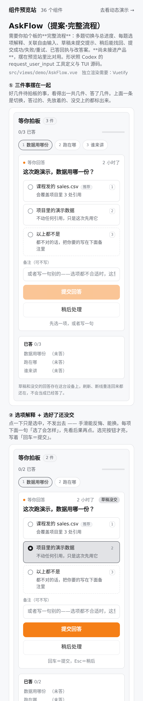
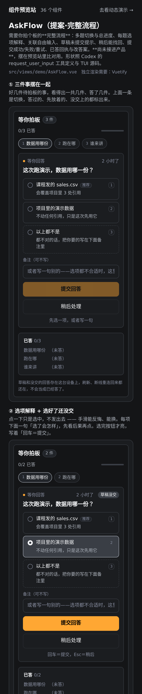

需要你拍板的问题：现在什么样，要改成什么样
给谁看：王长鑫、Codex 协调者 · 日期：2026-09-30 ·
代码分支：task/fea74412 · 改动性质：只是预览，尚未接进产品
这份东西说的是「AI 队友问你一个问题，你作答」这条路上的八件事：多题怎么切、
选项怎么解释、自由输入怎么带、草稿怎么不丢、稍后怎么找得回、交上去成没成功怎么看得见、
答完怎么改、刷新回来还在不在，以及答案最后交到谁手上。
前半是给人看的界面长什么样，后半是逐项核对表和来源。
先把边界说清楚，免得看图误以为已经做好了。
这些图是真组件渲染出来的，但它们跑在预览站里、喂的是假数据 ——
产品现在还没有「可作答的提问」这条链路。看到图不等于产品已经实现。
每张图下面都标了它属于哪一类证据。
一、四种证据，先分清
下面每一张图和每一行结论都挂着标签，别混着读：
| 标签 | 什么意思 |
|---|
| 真组件渲染 |
用真的前端组件画出来的图，喂的是写死的假数据。界面是真的，数据是假的，产品里没有这条链路。 |
| 假服务预览 |
失败、重试这种要「服务答应或拒绝」才走得通的，用一个假服务走真的一来一回（真的被调、真的被拒、真的记账）。服务是假的，所以它证明的是「被拒了界面会怎样」，不是「产品被拒了会怎样」。 |
| 线上只读 |
直接读现在的后端代码得到的事实（哪个字段、会不会报错、找谁）。只读不动。 |
| 本次新增目标 |
不是对照 Codex 抄来的，是我们这次要新做的，后端还没实现。凡是这种标签，都不许说成「Codex 已经有了」。 |
| 未做 / 未测 |
没做的、没测的，写明白，不拿别的东西顶替。 |
二、界面：提问、作答、已答三态
2.1 提问 —— 你看到的是什么
真组件渲染
三件事摆在一起。最上面写着「等你拍板 · 3 件」和「0/3 已答」，一眼看得出一共几件。
中间那条是切换：答过的、先放着的、没交上的，都带个小标记。每道题自己有一句话，
下面每项都写着「选了会怎样」。

真组件渲染
点一下只是选中，不发出去。手滑能反悔、能换。选完按钮才亮。
右上角直说「草稿没交」，不会让人以为已经答上了。

真组件渲染
选项都不对的时候有正路。「以上都不是」是界面自动加的，不是提问方给的 ——
提问方给的选项就该是 2–3 个互斥的选择，不该自己留后门。要走这条路，话写在下面备注里，
带着理由照样能交。
2.2 作答 —— 交上去那一下

真组件渲染
还有没答的就交？先问一句。可以「回去补」，也可以「照样交」。
不是默默把空的交出去，也不是非得答全才放行。

假服务预览
交不上去要看得见。红字直说「没答上」，你选的和写的一样不少地留在那儿，
「再交一次」就重试。
这一格走的是假服务：第一次真的被拒、第二次放行。不是产品里真被拒了。
这里改到一个真问题，不是图好看。
原来「再交一次」会把「还有没答的，照样交吗」再问一遍。
上一次已经答过「照样交」了，重试是同一次决定的重发，不该让人重复选。
已经改掉：重试不再重弹那个确认。
2.3 已答 —— 答完不消失

真组件渲染
答完留着回执。谁答的、选了什么、捎了一句什么，都在。下面那栏是全部题的总进度。
「改答案」是新的一版，原来那版留着不抹掉 —— 你不会因为改了主意就丢掉自己说过什么。
本次新增目标改答案的后端语义还没做，见第五节。
真组件渲染
「稍后处理」不是消失。题还在上面那条切换里挂着、标着先放着，
下面「已答」那栏写着（先放着），回来点「现在答」就接着答。
本次新增目标
刷新回来草稿还在，而且不算已答。
这一条不是照 Codex 抄的，是我们这次要新做的（理由见第六节）。
2.4 宽屏、窄屏、深色都得好看

真组件渲染宽屏 · 浅色

真组件渲染宽屏 · 深色

真组件渲染窄屏 · 浅色

真组件渲染窄屏 · 深色
三、真跑过的东西
3.1 浏览器真刷新，草稿回来了
「刷新回来还在」不能靠把组件拆了再装上证明 —— 那只是同一个程序里换个地方重新画，
比真刷新弱得多。这里用的是真的浏览器刷新，而且每次都核对一件事：
刷新前后跑程序的那个环境确实换了新的，才敢说这是刷新。
怎么证明草稿是从存里回来的，不是参数又给了一遍：
先往备注框里打一串随机字符，这串字符不在任何写死的参数里。刷新后它还在，
就只有一个来源 —— 存在这台设备上的那份草稿。
PASS 刷新前拿得到程序环境 → 环境号=3
PASS 找到那一格「⑧ 刷新回来草稿还在」
PASS 刷新前把标记打进了备注框 → got="reload-proof-1790764172484"
PASS 草稿写进了本机存储 → keys=["cheesex.askflow.preview-reload"]
PASS 刷新后程序环境换了（真的是刷新，不是重新画）→ 前=3 后=4 新建环境数=1
PASS 刷新后备注框里还是那个标记 → got="reload-proof-1790764172484"
PASS 恢复的是草稿：写着「草稿没交」
PASS 恢复的草稿没被标成已答（进度仍是 0/2）
PASS 恢复的草稿不出回执
9/9 通过
本次新增目标
脚本：ask-ux-preview/reload-proof.mjs；原始输出：ask-ux-preview/reload-proof.json。
3.2 失败之后输入还在，重试一次成功
这条链路要「服务拒绝」才走得通，所以放了一个假服务进去：它真的被调用、
真的拒绝、真的把每一次都记下来。组件不再自己假装失败 ——
自己假装失败的话，根本没走到任何服务，测出来的是组件的分支，不是「交上去被拒了会怎样」。
| 用例 | 验的是什么 | 怎么算过 |
|---|
| 3 |
服务拒了，输入不丢 |
假服务确实被调了一次（不是组件编的失败）；一次都没记成答；备注框里那句话一个字没变。 |
| 4 |
重试一次就成功 |
假服务确实被调了第二次并放行；失败时没丢的东西，重试交上去的是完整的。 |
假服务预览
假服务：frontend/src/views/demo/fakeAnswerService.ts。
服务是假的，所以这不是真实产品链路。
3.3 别抢中文输入
键盘快捷键最容易伤到中文输入：输入法正在组字时按回车，本来是想打字，却被当成「提交」。
这里做了三条：
- 焦点在输入框里时，字母 j / k / 数字 1–9 是打字，不是选项快捷键。
- 输入法组字中按下的回车不提交（按国际标准，组字中的按键带着「组合中」标记）。
- 什么都没选也没写，回车交不出去，会直说「先选一项，或者写一句」。
真组件渲染四条用例都真按了键。
3.4 一共跑了多少
| 跑什么 | 结果 |
|---|
提问流程自己的用例（AskFlow.spec.ts，12 条真动手的） | 12 / 12 通过 |
| 预览站整套（6 个文件，196 条） | 196 / 196 通过 |
| 浏览器真刷新 | 9 / 9 通过 |
| 样式底线检查 | 37 处，底线允许 37 —— 没涨 |
| 模块边界检查 | 116 处，底线允许 116 —— 没涨 |
| 类型检查 | 0 处错误 —— 没涨 |
那 196 条里，绝大部分是「每一格渲染出来不报错」的挂载检查，那不算链路验过。
真正一条条走链路的是上表第一行那 12 条。
而且 12/12 也不证明真实多题后端链路，不证明更正已经实现 ——
它只证明预览组件这八件事在假数据下走得通。
四、逐项核对：现在 / 要改成 / 验到哪了
| # |
事项 |
现在的产品 |
要改成 |
验到哪了 |
| 1 |
多题切换
总进度 |
一道题就是一个记录，选项是一张字符串列表。
后端「还有谁等我答」那套（block/repositories.py:794-844）
用「每个地方只取最新那一道」的方式算，同一个地方并存多道未答的题，它只认最新一道。
另一个叫「需要你过目」的面板倒是有「1 / N」的进度，但那里面的实体是通知，不是问题。
线上只读
|
一个地方多道题共存，上面一条切换 + 「N / M 已答」总进度；
答过的、先放着的、没交上的都在切换条上标出来。
|
真组件渲染图 2.1
用例 2「多题逐步提交」真答完两道，进度从 0/2 到 2/2。
产品侧未做，12/12 不证明后端多题链路
|
| 2 |
选项解释
+ 自由输入 |
选项只有文字，没有「选了会怎样」。
收答案那个接口（topics.py:2046 的 answer_options）
只收「选项」和「谁」两个字段，没有备注这一栏；你写的那句话现在只随聊天消息走，
答案记录里不存它。
而且接口要求选项一个字都不能差地命中它自己的选项表，
差一点就是「不在选项里」。所以「以上都不是」这类界面自动补的拒绝项，现在过不了这个接口。
线上只读
|
每项带一句「选了会怎样」；界面自动补「以上都不是」当拒绝的正路；
自由输入真的进答案，不只是聊天里说说。
|
真组件渲染图 2.2 / 2.3
用例 1「自由输入真的进答案」、用例 7「载荷按预定契约来」。
备注进答案、拒绝项被接收 —— 要连后端一起改，本次新增目标
|
| 3 |
草稿与
未提交提示 |
产品里没有「草稿」这个概念。未做 |
写了没交，界面直说「草稿没交」，不让人以为已经答上了。 |
真组件渲染图 2.2 / 2.3
用例 6 / 6b。
产品侧未做
|
| 4 |
稍后后
能找回 |
「还有谁等我答」那套里，你在聊天里说句话就会让它不再算「在等」，
但不会记成已答。线上只读
|
「稍后处理」不消失：切换条上挂着、标着先放着，回来点开就接着答。 |
真组件渲染图 2.3
用例 5「稍后处理找得回来」真放下、真找回、真答完。
产品侧未做
|
| 5 |
提交成功
失败 / 重试 |
成功时把答案写在问题记录上，并叫醒出题的那个席位；
失败就是报错。产品前端现在没有能作答的提问界面。
线上只读
|
失败看得见、输入一个字不丢、「再交一次」重试；
重试不重弹「照样交吗」（那次已经答过了）。
|
假服务预览图 2.2
用例 3 / 4 —— 假服务真的被调、真的被拒、真的记账。
真实产品接口未实现、未验
|
| 6 |
已答回执
与更正语义 |
回执只有「选了什么 + 谁选的」。
答过就不能改：再交一次直接报「已由某某选过」。
这是已核的当前行为，不是 bug。线上只读
|
见第五节：版本保原答案、已执行提示、新指令唤醒、幂等、跨用户安全边界。
「多人作答」本次不定，不扩成功能。
|
真组件渲染图 2.3 的回执与「改答案」界面
更正语义是本次新增目标 —— 后端还没做，本次只做出界面和设计，12/12 不证明它已实现
|
| 7 |
刷新 / 重连后
pending 和草稿 |
产品里没有草稿，谈不上恢复。
对照 Codex：见第六节的来源核对 —— 这一项标为我们自己的新增目标。
|
草稿存在这台设备上，刷新、断线重连回来还在，而且不算已答。 |
本次新增目标
浏览器真刷新 9/9（见 3.1）：环境号 3→4 证明确实是刷新，
随机标记证明确实是从存里回来的，进度仍是 0/2 证明没被标成已答。
|
| 8 |
答复归属与
恢复正确执行者 |
收答案的接口会叫醒出题的那个席位：出题的人还在名册上就叫他自己的席位
（他手里才有这道题的来龙去脉），不在了才退回房间默认席位
（topics.py:2078-2083）。线上只读
另外：项目邀请那条走的是另一种「请你拍板」，根本没有出题人，
不能和这条并成一条。
|
更正送到同一个席位（空闲就正常唤醒接下一轮，还在跑就按平台排队/注入语义接新指令）；
不能改别人的署名和原答案；并发版本安全。
「一道题能不能多人作答」是产品规则，本次不定。
|
线上只读寻址逻辑已核到源码
真跑未做 —— 按要求不在活跃话题里发测试问题逼人回答
|
「待办入口能不能复用」这个问题，答案是：入口能复用，东西不能合并。
「还有谁等我答」那个入口已经在报「等你回答」了，「需要你过目」那个面板也已经有
「1 / N」的进度条 —— 这两处入口可以拿来挂新的提问。
但它们里面装的是三样不同的东西：一个是通知、一个是聊天里的问题记录、
一个是任务和房间。后端那套「还有谁等我答」的注释里还专门写了
「为什么不能读通知表」：通知是一条条事件记录，被驳回或作废后记录还躺在表里，
读不出「不作数了」。项目邀请更是没有出题人。
硬把它们并成一种，「叫醒正确的执行者」这条链就断了。
五、答完还能改：怎么改才不出事
「答完不能改」是现在的真实行为，不是 bug。
但完整体验里有「更正」，所以这属于这次要新做的目标。
下面是设计，后端还没实现，预览里只做出了界面。
5.1 版本保原答案 —— 更正是新的一版，不是把旧的抹掉
- 答案记录从「一个答案」变成一串版本：第 1 版、第 2 版都留着，各带各的署名和时间。
- 界面回执写「你之前选的是 A，现在改成 B」，不抹掉原回答。
- 只有原来回答的那个人能更正自己的答案。别人的意见记成新的一条，不顶掉别人的署名。
5.2 已执行提示 + 新指令唤醒 —— 开工了就不能偷偷换掉
- 如果按原回答已经开工了，改答案时先提醒：「按你上一个回答已经开工了」。
- 更正当作新的指令送出去，送到正确的那个席位（和答原题时同一个，见表第 8 行），
让它知道要改。原文是不重放原回答，送进去的是「改成什么」这条新指令。
「唤醒同一个席位」不等于「绝不启动新的一轮」。
要按执行者当下的状态来，两种都不一样：
- 执行者空闲时 —— 正常唤醒，它接下一轮处理更正。不能因为怕「多一轮」就让它空着永不处理。
- 执行者还在跑时 —— 按平台安全的消息注入 / 排队语义把新指令送进去，
不重放原回答，也不把跑着的那一轮悄悄换掉。
这里的边界是
保持同话题、同席位、不新开任务卡 ——
不是「不许有新的一轮」。
5.3 幂等 —— 同一份更正，重发不产生第二版
- 每次更正请求带上「这是第几版」。
- 服务端比对当前版本：对得上就落一版；同一版重发，不产生第二版（幂等）。
- 对不上就拒绝，并说「这份回答已经被更正过了」—— 一个慢半拍的旧请求盖不回新答案。
5.4 跨用户权限 —— 只定安全边界，不顺手扩功能
- 不能改别人的署名和原答案。谁答的记在谁头上，别人动不了。
- 更正要走授权。不是谁都能改，能改的范围按授权来。
- 并发版本安全。两个更正同时来，靠版本号判先后，不互相覆盖、不丢掉其中一版。
「同一道题允不允许别人也答一条」是产品规则，本次不定。
上面只定安全边界（署名、授权、并发），不把它扩成「一道题可以有多个人回答」这种功能 ——
那是另一个决定，要单独定方案。
六、来源核对：哪些是 Codex 的事实，哪些是我们的目标
下面只说一个版本的事，不推广到整个产品。版本是
openai/codex 的提交 d42056091aded7feb1d88ac7e83972108b2aa478，
路径都在 codex-rs/ 下，属于命令行 / 终端界面（CLI/TUI）。
所有行号都对着这个提交核过。
三条必须一起读，否则会读成别的意思：
- 桌面端这轮没测过。下面所有事实只对 CLI/TUI 成立，桌面端写明「未测」。
- 终端界面里那个「草稿」结构体本身没有存盘的代码 —— 但这只能说明
这个文件不落盘，不能推出「Codex 整个产品都不保存」。
- 源码里那三条 TODO 说的是「被打断时」把已交答案回传这件事还不可靠，
不是说常规已答都不保存。不许写成「Codex 自己也没做到」。
6.1 提问该怎么问 —— 这是 OpenAI 自己写的产品说明
codex-rs/core/src/tools/handlers/request_user_input_spec.rs（工具说明，CLI/TUI）
:20 label = "User-facing label (1-5 words)."
:25 description = "One short sentence explaining impact/tradeoff if selected."
:35 "Provide 2-3 mutually exclusive choices. Put the recommended option first and
suffix its label with \"(Recommended)\". Do not include an \"Other\" option in
this list; the client will add a free-form \"Other\" option automatically."
:49 header = "Short header label shown in the UI (12 or fewer chars)."
:55 question = "Single-sentence prompt shown to the user."
:72 "Questions to show the user. Prefer 1 and do not exceed 3"
所以：选项是 2–3 个互斥选择，推荐的放第一个并在标签后写「(Recommended)」；
提问方不许自己加「Other」，那一项是界面自动补的；
标签 1–5 个词、标题 不超过 12 字、问题一句话、题不超过 3 道。
每项下面那句「选了会怎样」是 OpenAI 明写的 description。
6.2 答案长什么样、默认阻不阻塞
codex-rs/protocol/src/request_user_input.rs（协议，CLI/TUI）
:22 pub is_other: bool
:26 pub is_secret: bool
:37 pub is_blocking: bool
:38 /// @deprecated Use `isBlocking` to decide whether the request should block.
:41 pub auto_resolution_ms: Option<u64>
:45 pub struct RequestUserInputAnswer { :46 pub answers: Vec<String> }
:95 is_blocking: wire.is_blocking.unwrap_or(true) // 不给就默认阻塞
旧的 autoResolutionMs 已经标了弃用，注释明说改用 isBlocking
判断；不给 isBlocking 时默认是阻塞（要等你答）。
6.3 界面上那些字、自动到期、键盘
codex-rs/tui/src/bottom_pane/request_user_input/mod.rs（终端界面，CLI/TUI）
:57 NOTES_PLACEHOLDER = "Add notes"
:58 ANSWER_PLACEHOLDER = "Type your answer (optional)"
:64 OTHER_OPTION_LABEL = "None of the above"
:65 OTHER_OPTION_DESCRIPTION = "Optionally, add details in notes (tab)"
:66 UNANSWERED_CONFIRM_TITLE = "Submit with unanswered questions?"
:67 UNANSWERED_CONFIRM_GO_BACK = "Go back"
:68 UNANSWERED_CONFIRM_GO_BACK_DESC = "Return to the first unanswered question"
:69 UNANSWERED_CONFIRM_SUBMIT = "Proceed"
:72 AUTO_RESOLUTION_HIDDEN_GRACE = 60 秒
:73 AUTO_RESOLUTION_VISIBLE_COUNTDOWN = 60 秒
:269-288 自动到期怎么算：
is_blocking 为真 或 已被推迟 → 不到期
60 秒内 → 静默宽限；再 60 秒 → 倒计时；到点 → 该了结了
:263-265 推迟自动到期只在「不阻塞」时生效
:842-870 交出去的答案 = [选中那项的标签] + ["user_note: 你写的话"]
（只有明确交过的题才带备注）
:941-948 "Submit with {N} unanswered {questions}"
:1110-1135 确认浮层的键位：Esc/回退=回去补，↑/k、↓/j、回车、数字 1/2
注意 :1110-1135 那组键位是确认浮层里的；主列表的键位走
list_keymap（同一提交里另一处）。
6.4 草稿到底存不存 —— 这一项的结论
:128 struct AnswerState {
:132 draft: ComposerDraft,
:134 answer_committed: bool,
}
全文件 serde / Serialize / Deserialize 出现次数：0
只能说：在这个终端界面文件里，草稿是内存里的状态，这个文件不写盘。
推不出「Codex 整个产品都不保存」。桌面端未测。
:1195-1197 / :1431-1433 / :1442-1444 （三处相同）
// TODO: Emit interrupted request_user_input results (including committed answers)
// once core supports persisting them reliably without follow-up turn issues.
这三条说的是被打断时把已交答案回传这件事，核心层还不能可靠持久化，
不是常规已答不保存。
所以第七件事（刷新后草稿还在）标为「本次新增目标」。
要么有人能给出 Codex 里具体的持久化文件和行，它就升级成「Codex 有、我们对齐」；
否则它就是我们自己要做的东西，不许写成「照 Codex 抄」。
七、接下来要什么
- 图和表这样够不够 —— 界面八件事是否都要，还是有哪几件先不做。
- 第五节的更正设计要不要按这个做。
- 确认之后，才是把预览接进产品、动后端的活。
在那之前不改产品，只出预览和这份东西。已按要求：不在活跃话题里发测试问题逼人回答，
所有复现都在隔离的预览和测试里做。